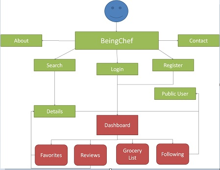

Shown below is the BeingChef application flow. This diagram covers the important flow within the application.
Access to pages within the red box requires the user to login, whereas the pages within the green box is accessible to any visitor
